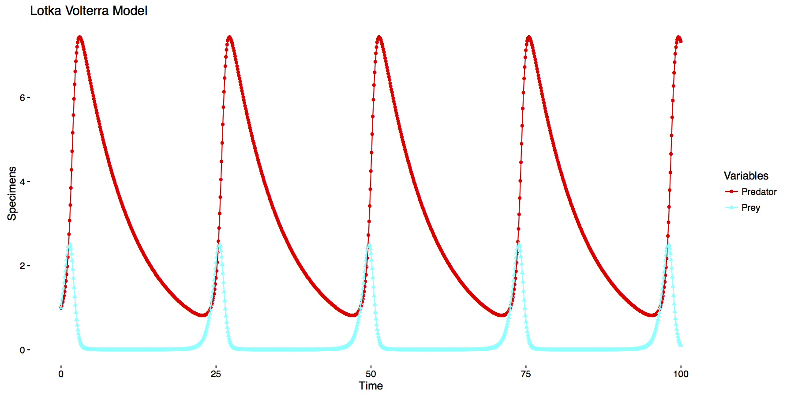
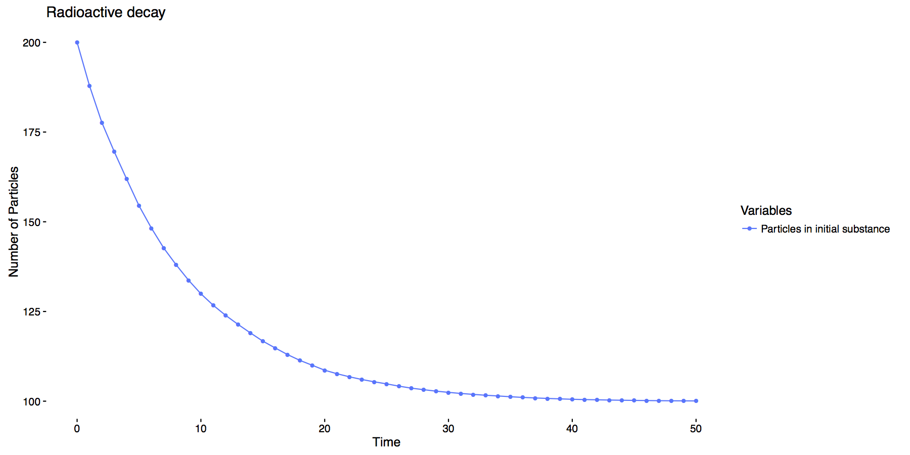

Examples
If you are interested in a worked example click here . These are examples of models programmed with CompartmentalizeR
Lotka Volterra
Description
In this model we consider two populations: Predators and Preys. It is assumed that the number of born Preys depends only upon the number of Preys; the number of Predators depends on the number of Preys and Predators and that Predators can exit the model by dying in a linear fashion.
Equations
Plot
Files
Radioactive Decay
Description
In this model we consider a substance with \(x_1\) initial Particles in substance which decay at a constant rate \(\omega_{1 \to 1}\) by "exiting" the substance and becoming Decayed particles.
Equations
The classic model is given by:Plot
Files
Susceptible Infected Recovered (SIR)
Description
In this model we assume a population with three different type of individuals: those Susceptible to a disease, those Infected by a disease which can infect other Susceptible by interacting with them and those Recovered which are Infected people who have recovered at a constant rate.